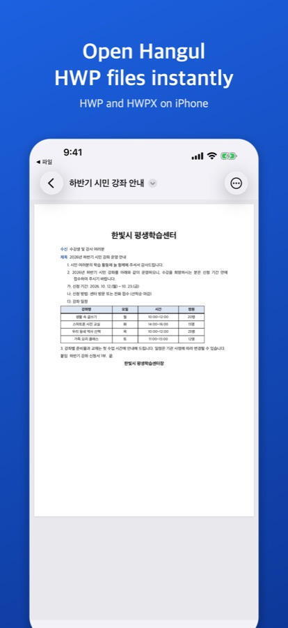
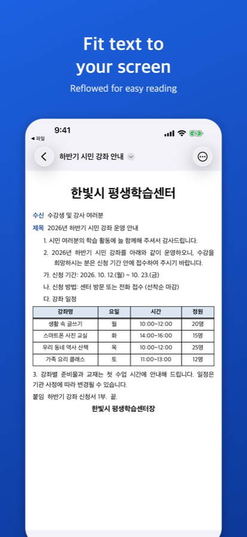

HWP files from KakaoTalk on iPhone
Why can't I see the document?
iPhone has no built-in support for Hangul word-processor documents (.hwp, .hwpx), the format most Korean schools, offices and public institutions use. Tapping one in a chat often shows only the file name. With a viewer app installed, you can open it from KakaoTalk's share menu.
Get HWP Viewer on the App Store
Viewing, search, PDF export and printing are free. Form saves (saving as a Hangul file, signed PDFs or page images) and PDF/photo conversion are free three times each; after that, a one-time lifetime unlock keeps them going (4,400 won on the Korean App Store as of October 2026; not a subscription).
The app's interface is in Korean; the Korean menu names are given below in quotes.
Open it
- Tap the file in the KakaoTalk chat to download it.
- Tap the share (export) button.
- Choose “HWP 뷰어” in the app row (if it is not there, look under “More” at the end of the row).
- The document opens as laid out on the page.
Files saved in the Files app can be opened from the app's Browse tab. Once the app is installed, tapping a Hangul file in Files shows a preview.


Easier reading on a small screen
At the top of the “더 보기” (…) menu, “화면에 맞춰 보기” reflows the text to the screen width; “쪽 모양으로 보기” returns to the page layout. “찾기” searches the document and “소리로 듣기” reads it aloud in Korean.
Send it back in KakaoTalk
All three options are in the “더 보기” menu; pick KakaoTalk in the share sheet that follows.
As a PDF
“PDF로 저장·공유” makes a PDF exactly as the pages appear on screen, which opens on almost any device. Free.
As page images
“쪽 이미지로 공유” makes one PNG picture per page (up to 30), which shows in the chat like a photo. Free unless the document has a signature in it.
As the original file
“원본 파일 공유” forwards the file unchanged.
To fill in a reply slip first, see Fill in and sign a school reply form.
FAQ
Is my document uploaded?
No. Documents are read and shown on your device only. No account, server or ads.
It looks slightly different from the original.
Font differences can move line breaks, and some layout effects are simplified. Check important documents on a computer as well. Password-protected documents cannot be opened.